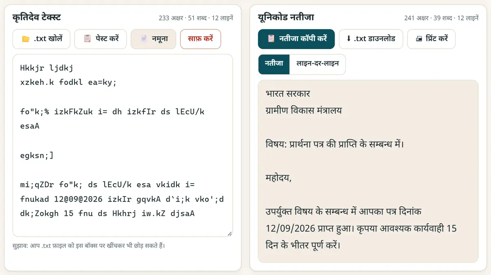
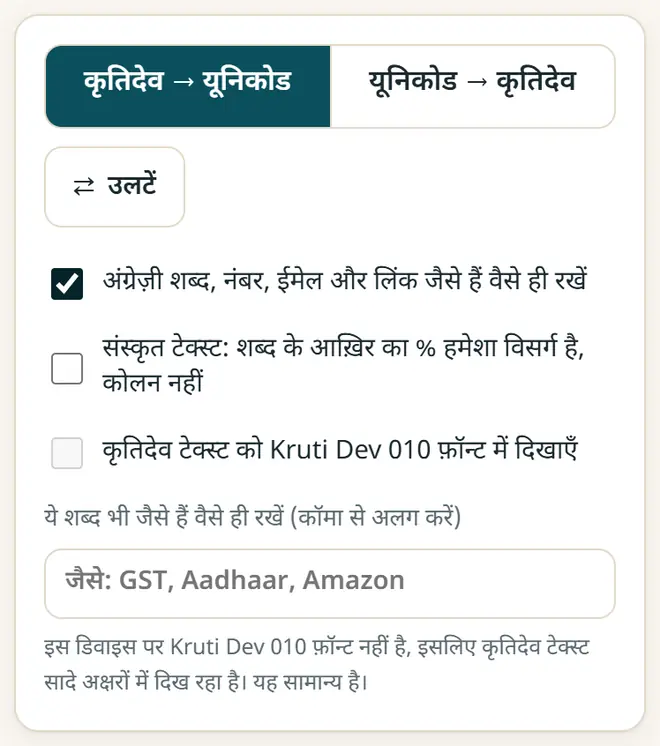

कृतिदेव को यूनिकोड में कैसे बदलें (और वापस)
पुरानी कृतिदेव फ़ाइलें फ़ोन और वेबसाइट पर “fd;k” जैसी दिखती हैं, क्योंकि यह फ़ॉन्ट अंग्रेज़ी अक्षरों के ऊपर सिर्फ़ हिंदी की शक्ल बनाता है। यूनिकोड में बदलते ही यह असली हिंदी टेक्स्ट बन जाता है, जो WhatsApp, Google Docs, ईमेल और सर्च में चलता है।
छोटा जवाब
कृतिदेव - यूनिकोड कन्वर्टर खोलें, “कृतिदेव → यूनिकोड” रहने दें और अपना कृतिदेव टेक्स्ट पेस्ट करें। यूनिकोड हिंदी तुरंत आ जाती है: “नतीजा कॉपी करें” या “.txt डाउनलोड” दबाएँ। अगर किसी ऑफ़िस या प्रेस को कृतिदेव चाहिए, तो “यूनिकोड → कृतिदेव” चुनें।
5 स्टेप में कृतिदेव से यूनिकोड
-
कृतिदेव टेक्स्ट कॉपी करें
अपनी पुरानी Word या PageMaker फ़ाइल खोलें, टेक्स्ट सेलेक्ट (Ctrl+A) और कॉपी (Ctrl+C) करें। लंबी .txt फ़ाइल हो तो उसे सीधे कन्वर्टर में खोल सकते हैं।
-
कन्वर्टर खोलें
कृतिदेव - यूनिकोड कन्वर्टर खोलें और देखें कि “कृतिदेव → यूनिकोड” चुना हुआ है। पहले उदाहरण देखना हो तो “नमूना” दबाएँ।
-
टेक्स्ट पेस्ट करें
टेक्स्ट बॉक्स में पेस्ट करें। यूनिकोड नतीजा तुरंत दिखता है। लाल निशान उन अक्षरों पर होते हैं जो बदल नहीं पाए और जिन्हें हाथ से जाँचना है।

कृतिदेव टेक्स्ट डालें, यूनिकोड हिंदी पाएँ, टाइप करते ही। -
अंग्रेज़ी शब्द जैसे के तैसे रखें
अगर आपके पत्र में हिंदी के साथ अंग्रेज़ी में नाम, ईमेल या फ़ाइल नंबर हैं, तो “अंग्रेज़ी शब्द, नंबर, ईमेल और लिंक जैसे हैं वैसे ही रखें” चालू करें, ताकि वे हिस्से न बदलें।

विकल्प: अंग्रेज़ी शब्द, नंबर और लिंक जैसे के तैसे रखें। -
नतीजा कॉपी या डाउनलोड करें
“नतीजा कॉपी करें” दबाकर कहीं भी पेस्ट करें, या “.txt डाउनलोड” दबाएँ। Word में मंगल (Mangal), Nirmala UI या Noto Sans Devanagari जैसा यूनिकोड फ़ॉन्ट रखें।
कृतिदेव और यूनिकोड में क्या फ़र्क़ है?
- कृतिदेव 010 एक पुराना फ़ॉन्ट है: कंप्यूटर अंग्रेज़ी अक्षर (fd;k) सेव करता है और फ़ॉन्ट उन्हें हिंदी (किया) जैसा दिखाता है।
- यूनिकोड (मंगल, Nirmala UI, Noto) असली हिंदी अक्षर सेव करता है, इसलिए हर फ़ोन, वेबसाइट और सर्च इंजन उन्हें पढ़ सकता है।
- कई दफ़्तर, अदालतें और टाइपिंग टेस्ट अब भी कृतिदेव इस्तेमाल करते हैं, इसलिए कन्वर्टर उल्टा भी चलता है: “यूनिकोड → कृतिदेव”।
- कृतिदेव 011, 016, 055 और DevLys 010 में भी कृतिदेव 010 वाली ही कुंजियाँ हैं, इसलिए वे भी ऐसे ही बदलते हैं।
नए मुफ़्त टूल और हिंदी में AI के पाठ पाएँ
हमारी ईमेल लिस्ट से जुड़ें: नए मुफ़्त ऐप, नई गाइड और AI पर हिंदी वीडियो पाठ की जानकारी आपको मिलती रहेगी। कोई स्पैम नहीं।
सिर्फ़ वयस्कों (18+) के लिए। आप कभी भी नाम हटवा सकते हैं।
हम ये टूल क्यों सुझाते हैं
- सबके लिए मुफ़्त: न विज्ञापन, न साइन-अप, न कोई पेड प्लान।
- प्राइवेट: आपकी फ़ाइलें और जानकारी आपके अपने डिवाइस पर ही रहती हैं।
- फ़ोन, लैपटॉप या स्मार्टबोर्ड पर चलते हैं, और एक बार खुलने के बाद बिना इंटरनेट भी।
- हिंदी समेत 12 भाषाओं में।
वीडियो से सीखना पसंद है? हमारे YouTube चैनल पर AI और मुफ़्त टूल्स के हिंदी पाठ देखें।
अक्सर पूछे जाने वाले सवाल
कृतिदेव को मंगल फ़ॉन्ट में कैसे बदलें?
मंगल एक यूनिकोड फ़ॉन्ट है। टेक्स्ट को कृतिदेव से यूनिकोड में बदलें, Word में पेस्ट करें और फ़ॉन्ट मंगल या Nirmala UI रखें।
क्या यह मराठी और संस्कृत के लिए भी चलता है?
हाँ। यह ळ जैसे मराठी अक्षर भी बदलता है, और इसमें संस्कृत का विकल्प है, जिसमें शब्द के आख़िर का % हमेशा विसर्ग (ः) बनता है।
क्या मेरा टेक्स्ट सुरक्षित है?
हाँ। बदलाव आपके डिवाइस पर ही होता है। कुछ भी अपलोड नहीं होता, इसलिए क़ानूनी, अदालती और सरकारी मसौदों के लिए यह सुरक्षित है।
कुछ अक्षर लाल क्यों रह जाते हैं?
वे कृतिदेव 010 के कीबोर्ड का हिस्सा नहीं हैं; अक्सर वे चाणक्य जैसे किसी दूसरे फ़ॉन्ट या ख़राब फ़ाइल से आते हैं। उन्हें हाथ से ठीक करें।
क्या यूनिकोड को वापस कृतिदेव में बदल सकते हैं?
हाँ। “यूनिकोड → कृतिदेव” चुनें, हिंदी टेक्स्ट पेस्ट करें, नतीजा कॉपी करें और Word, PageMaker या CorelDRAW में फ़ॉन्ट Kruti Dev 010 रखें।
काम की लगी?
इसे किसी दोस्त, साथियों या अपने स्कूल के WhatsApp ग्रुप में भेजें।